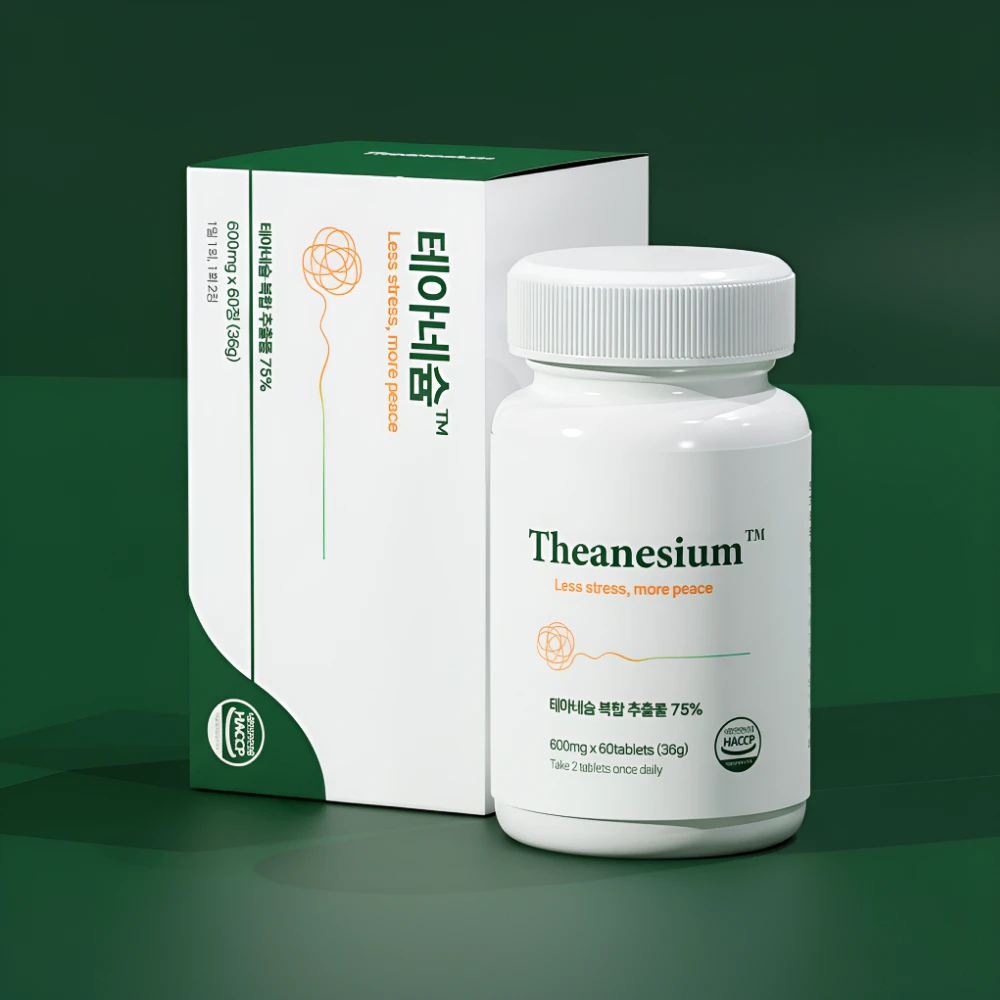

어지럼과 혈압 변화
일어설 때 어지럽거나 실신하는 등 자세 변화와 관련된 불편이 나타날 수 있습니다.
BUSAN · AUTONOMIC HEALTH GUIDE
부산 자율신경실조증 정보를 찾는 분들을 위해 주요 증상과 진료 준비, 영양제 선택 기준을 정리했습니다. 반복되는 불편의 원인을 이해하고, 나에게 필요한 정보를 확인하세요.
일반 건강 정보와 판매처 제품 정보를 함께 제공합니다.

01 / UNDERSTANDING
자율신경계는 심박수와 혈압, 소화, 땀 분비 등 의식적으로 조절하지 않는 기능에 관여합니다. 자율신경실조증은 이러한 기능의 조절에 문제가 생기는 여러 상태를 아우르는 표현입니다.
증상과 원인은 사람마다 다릅니다. 불편이 반복된다면 검색 결과만으로 판단하기보다 의료진과 원인을 확인하는 것이 중요합니다.
참고: 미국 국립의학도서관 MedlinePlusSYMPTOMS
아래 증상은 다른 원인으로도 나타날 수 있습니다.
해당되는 항목이 있다고 진단되는 것은 아닙니다.
일어설 때 어지럽거나 실신하는 등 자세 변화와 관련된 불편이 나타날 수 있습니다.
심박수 조절에 문제가 생길 수 있습니다. 두근거림은 발생 시점과 지속 시간을 기록하세요.
소화 기능의 변화가 동반될 수 있습니다. 식사와 증상 사이의 관계도 살펴보세요.
땀 분비 등 몸의 조절 기능에 변화가 나타날 수 있습니다. 다른 증상과 함께 의료진에게 전달하세요.
갑작스러운 심한 흉통, 호흡곤란이나 실신이 발생하면 자가 관리보다 즉시 의료기관의 평가를 받으세요.
02 / BEFORE YOUR VISIT
부산에서 진료기관을 알아볼 때는 거리나 후기와 함께, 내 증상을 평가할 수 있는 진료과와 검사 가능 여부를 확인하세요. 자율신경 관련 검사의 필요성과 종류는 진료 후 의료진이 판단합니다.
이 페이지는 특정 부산 병원의 운영 정보나 치료 결과를 추천·보증하지 않습니다.
체크하며 준비하세요. 입력 내용은 전송되지 않습니다.
03 / A BETTER CHOICE
제품 이름이나 후기만으로 선택하기보다, 표시사항과 현재 섭취 중인 성분을 함께 살펴보세요. 영양 보충과 질환 치료는 목적이 다릅니다.
전체 원재료와 1일 섭취량당 함량을 확인하세요. 특정 성분이 들어 있다는 사실과 제품의 질환 치료 효과는 다릅니다.
다른 영양제와 겹치는 성분이 있는지 살펴보세요. 마그네슘은 일부 약물과 상호작용할 수 있어 함께 복용할 때 확인이 필요합니다.
제품에 표시된 섭취 방법과 주의사항을 확인하세요. 복용약이나 질환이 있다면 의료진 또는 약사에게 상담하세요.
04 / PRODUCT INFORMATION
제품 선택에 필요한 원료와 표시사항을 확인해 보세요. 정확한 함량, 섭취 방법과 최신 구매 조건은 판매 페이지에서 확인할 수 있습니다.
이 제품은 의약품이 아니며 자율신경실조증의 진단이나 치료를 대신하지 않습니다. 원료 정보는 판매처 안내를 바탕으로 정리했습니다.
QUESTIONS & ANSWERS
검색하다 궁금했던 내용을
하나씩 확인하세요.
현재 가장 불편한 증상을 상담할 수 있는 진료과가 있는지, 자율신경 관련 평가가 가능한지 방문 전 문의하세요. 검사 종류와 예약 방법은 기관별로 다를 수 있으므로 직접 확인하는 것이 좋습니다.
어지럼, 심박수 변화, 소화 불편 등은 다른 원인으로도 나타날 수 있습니다. 증상 기록과 진료를 통해 원인을 확인하고, 검사 필요성은 의료진과 상의하세요.
영양제는 영양 보충을 위한 제품입니다. 특정 제품의 섭취가 자율신경실조증 치료를 의미하지 않습니다. 지속되는 증상은 원인에 따른 평가와 관리가 우선입니다.
판매처는 L-테아닌, 마그네슘, GABA, 트립토판 함유를 안내합니다. 각 성분의 정확한 함량과 전체 원재료, 주의사항은 구매할 제품의 표시사항을 확인하세요.
이 페이지에서 부산 오프라인 판매처를 확인해 안내하고 있지는 않습니다. 소개된 온라인 판매 페이지에서 주문·배송 조건을 확인하거나 판매처 고객센터에 문의하세요.